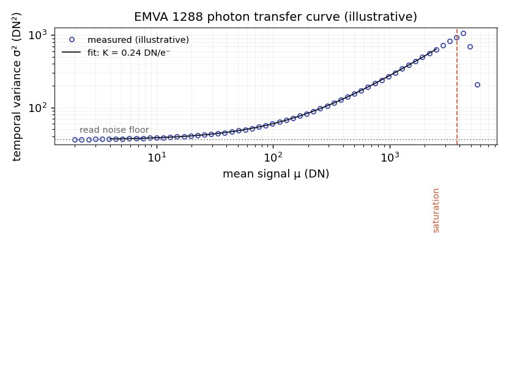
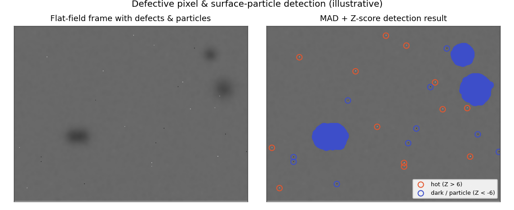
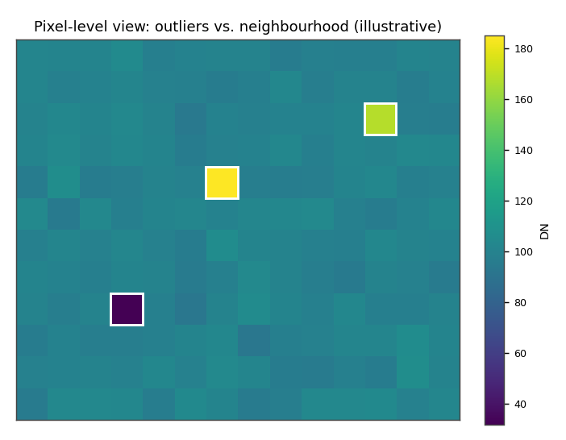
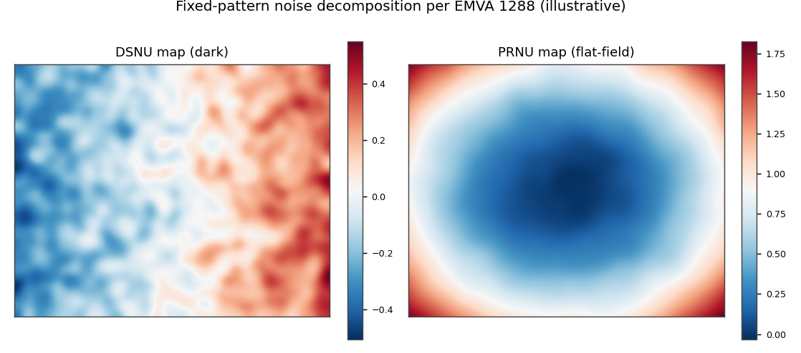

Dual-Illumination System for Image Sensor Characterization and Defect Detection
EMVA 1288 sensor characterization traditionally relies on integrating spheres or long collimated free-space setups to achieve homogeneous flat-field illumination at the specified f-number. Contamination and defect inspection normally requires separate instruments, making combined evaluation slow and impractical in production settings.
ApproachDesigned and built a compact dual-illumination optical test bench: a dome-based broadband channel for uniform flat-field illumination (standardized characterization and pixel defect mapping) and a co-aligned telecentric channel for high-contrast detection of surface particles and defects. Both modes share a common optical axis with electronically adjustable intensity, so the sensor never needs repositioning. Custom 3D-printed opto-mechanical housings, multi-axis alignment with tilt control, active thermal management under the sensor, and integration into an industrial production control platform.





A Python-based EMVA 1288 evaluation pipeline covering photon transfer analysis, system gain, quantum efficiency, temporal noise, SNR, dynamic range, linearity, and DSNU/PRNU decomposition, plus robust-statistics defect detection (MAD and Z-score methods) for hot/dead pixels and micron-scale surface particles. Fully automated acquisition, processing, and standardized plot generation traceable to the EMVA 1288 Release 4.0 framework.
OutcomeA working prototype that combines standards-compliant characterization and sensitive surface inspection in a single integrated workflow, something conventional integrating-sphere benches cannot do without separate instruments and procedures.